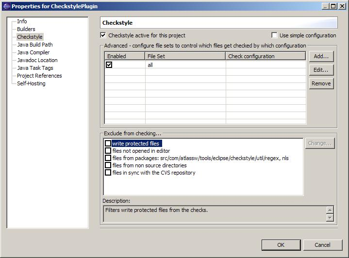

The Eclipse Checkstyle Plug-in contains a filter facility that uses filters to exclude certain files from
checking.
Knowing that the plugin allows you to configure file sets you might ask why there are also filters.
This feature seems to be quite redundant to file sets.
Lets think about this some more.
File set let you configure patterns that determine if a file gets included or excluded from the checks based
on the file name.
In some situations this is quite sufficient but there are also cases where you want to exclude files based on
other properties, for instance if you want to exclude files that are write protected.
The filters are accessible in the bottom section of the Checkstyle Project Properties Page.

To enable a filter for your project just select the corresponding check box.
Some filters are configurable, if you select such a filter the Change... button will become enabled.
Pressing the Change... button will open a specific filter editor.
The following filters come with the Checkstyle Plug-in:
Filter for write protected files
Use this filter if you want to check only writable files. This filter is particular useful if you use
a Versioning system with a Check-In/Check-Out semantic which uses file write protection to
allow/disallow modification.
So you can restrict the Checkstyle Plug-in to only check files you are actually working on (because
you checked them out from the repository).
Filter for files that are not opened in an Eclipse editor
You can use this filter to check only files you opened in an Eclipse editor.
Filter for files from specific packages
This is a configurable filter, allowing you to specify the packages you want to exclude from checking.
You can, of course, get the same result by configuring file
sets.
Filter for files from non source directories
Some projects have java sources outside of source folders (for instance build folders where all
sources are copied to for source distribution builds).
With this filter you can exclude this files from the checks. Again, this can be also achieved by configuring file sets - but for most cases the filter is easier to
use.
Filter that excludes all files that are in sync with the CVS repository
If your project is based on a CVS repository you might want to use this filter.
With this you can limit the checks to the files you actually changed. All other files that are in sync
with the repository (therefor unchanged) are excluded from the checks.
The Eclipse Checkstyle Plug-in filters are base on some very simple interfaces - so the filter facility is
very much extensible.
The plug-in provides an extension point for filters that can be used to provide your custom filter. Read here for more info about extending the
plug-in with filters.